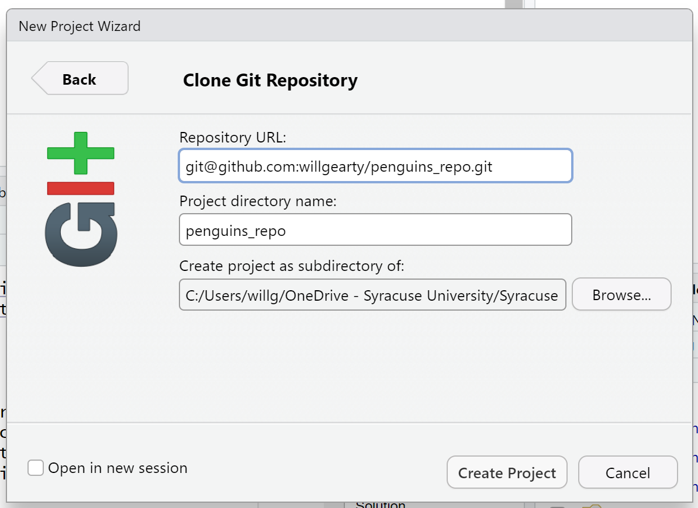
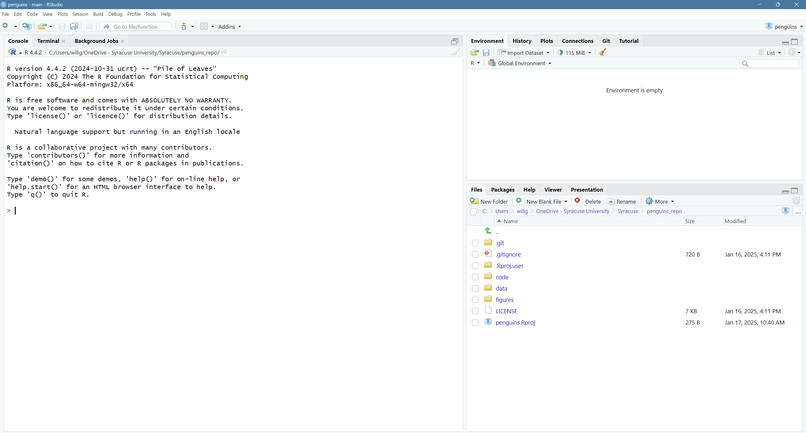
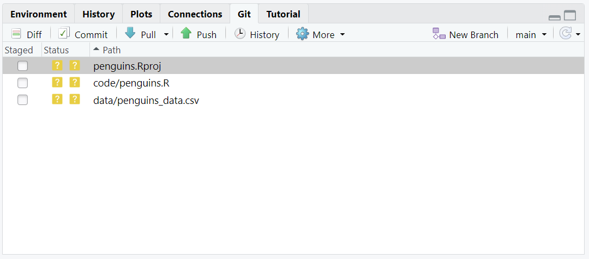

Today we will use R, but we could have also used Python for the same reasons we chose R (and we teach workshops for both languages). Both R and Python are freely available, the instructions you use to do analyses are easily shared, and by using reproducible practices, it’s straightforward to add more data or to change settings like colors or the size of a plotting symbol.
Why R and not Python?
There’s no great reason. Although there are subtle differences between the languages, it’s ultimately a matter of personal preference. Both are powerful and popular languages that have very well developed and welcoming communities of scientists that use them. As you learn more about R, you may find things that are annoying in R that aren’t so annoying in Python; the same could be said of learning Python. If the community you work in uses R, then you’re in the right place.
To run R, all you really need is the R program, which is available for computers running the Windows, Mac OS X, or Linux operating systems. You should have downloaded R while getting for this workshop.
RStudio
To make your life in R easier, there is a great (and free!) program called RStudio that you also downloaded and used during set up. As we work today, we’ll use features that are available in RStudio for writing and running code, managing projects, installing packages, getting help, and much more. It is important to remember that R and RStudio are different, but complementary programs. You need R to use RStudio.
Bonus Exercise: Can you think of a reason you might not want to use RStudio?
On some high-performance computer systems (e.g., Amazon Web Services) you typically can’t get a display like RStudio to open. Your university may have an interactive cluster available, but Syracuse University’s Zest HPC cluster does not permit interactive development. If you need to use RStudio, Syracuse affiliates should check out Google Colab.
To get started, we’ll spend a little time getting familiar with the RStudio environment and setting it up to suit your tastes. When you start RStudio, you’ll have three panels.
On the left you’ll have a panel with three tabs - Console, Terminal, and Jobs. The Console tab is what running R from the command line looks like. This is where you can enter R code. Try typing in 2+2 at the prompt (>). In the upper right panel are tabs indicating the Environment, History, and a few other things. If you click on the History tab, you’ll see the command you ran at the R prompt.
In the lower right panel are tabs for Files, Plots, Packages, Help, and Viewer. Click on the “Packages” tab. Packages are add-on libraries developed by R community members. Each package contains a suite of functions that, once loaded, can be used within your code. As an exercise, we’ll install the “tidyverse” package, which we’ll end up using a lot in our future sessions. Click the Install button, then type “tidyverse” in the empty box and click the Install button. The installation process may take a few minutes since this is actually installing more than 10 packages and their dependencies (the packages that provide functions that are then used in these packages).
The tidyverse vs Base R
If you’ve used R before, you may have learned commands that are different than the ones we will be using during this workshop. We will be focusing on functions from the tidyverse. The “tidyverse” is a collection of R packages that have been designed to work well together and offer many convenient features that do not come with a fresh install of R (aka “base R”). These packages are very popular and have a lot of developer support including many staff members from RStudio. These functions generally help you to write code that is easier to read and maintain. We believe learning these tools will help you become more productive more quickly.
You can use the Pane Layout menu (accessed from the button that look like a top-down view of a 2x2 ice cube tray) to change where different tabs live. For example, I like to have the plots in the top right panel, so I can see the help docs and the plots at the same time. I also usually switch the positions of the console and editor so that the editor is on the bottom.
We’ll spend more time in each of these tabs as we go through the workshop, so we won’t spend a lot of time discussing them now.
You might want to alter the appearance of your RStudio window. The default appearance has a white background with black text. If you go to the Tools menu at the top of your screen, you’ll see a “Global options” menu at the bottom of the drop down; select that.
From there you will see the ability to alter numerous things about RStudio. Under the Appearances tab you can select the theme you like most. As you can see there’s a lot in Global options that you can set to improve your experience in RStudio. Most of these settings are a matter of personal preference.
Projects
One of the helpful features in RStudio is the ability to create a project. Projects make it straightforward to divide your work into multiple contexts, each with their own working directory, workspace, history, and scripts. You can create a fresh project, base one on an existing directory, or even build one based on a git repository. Since we’re all git experts now, let’s go with that option.
First, we’ll need to create a GitHub repository. For the rest of the workshop, we’ll be using data collected about adult male and female Adélie (P. adeliae), chinstrap (P. antarcticus), and gentoo (P. papua) penguins on three islands (Biscoe, Dream, and Torgersen) within the Palmer Archipelago. For more information about the collection and handling of these data, see Gorman et al. 2014 and Horst et al. 2022.
I’ve hosted these data within a fresh repository on GitHub. Like you did in the git and Github session, go ahead and fork this repository so that you have your own personal copy of it.
Once you’ve forked the repository, copy the URL of the repo and return to RStudio. At the top of your screen you’ll see the “File” menu. Select that menu and then the menu for “New Project…”. (You could also use the second button on the second menu row or even the Project: (None) button in the top right)
When the smaller window opens, select “Version Control” and then “Git” in the next window.
Now paste your repository URL in the first box, then name your new repo directory in the second box (i.e., the name of the folder containing the repo on your computer; “penguins” is probably a good choice), and finally use the Browse button to select the local directory that you want to create this new directory within (i.e., the parent directory).

Then click the Create Project button.
Did you notice anything change?
In the lower right corner of your RStudio session, you should notice that your Files tab is now your project directory. You’ll also see a file called penguins.Rproj in that directory.
From now on, you should start RStudio by double clicking on that file. This will make sure you are in the correct directory when you run your analysis.

Scripts
Using the console is fine, but we’d ideally like to be able to save the R code that we write. This is where scripts and the Editor come in.
Back in the “File” menu, you’ll see the first option is “New File”. Selecting “New File” opens another menu to the right and the first option is “R Script”. Select “R Script”.
Now we have a fourth panel in the upper left corner of RStudio that includes an Editor tab with an untitled R Script. Let’s save this file as penguins.R within the “code” directory.
We will now be entering all of our R code into the Editor tab to then run it in our Console panel.
On line 1 of penguins.R, type 2 + 2.
With your cursor on the line with the 2 + 2, click the button that says Run. You should be able to see that 2 + 2 was run in the Console.
As you write more code, you can highlight multiple lines and then click Run to run all of the lines you have selected.
Let’s delete the line with 2+2 and replace it with library(tidyverse).
Go ahead and run that line in the Console by clicking the Run button on the top right of the Editor tab and choosing Run Selected Lines. This loads a set of useful functions and sample data that makes it easier for us to do complex analyses and create professional visualizations in R.
library(tidyverse)
── Attaching core tidyverse packages ──────────────────────── tidyverse 2.0.0 ──
✔ dplyr 1.1.4 ✔ readr 2.1.5
✔ forcats 1.0.0 ✔ stringr 1.5.1
✔ ggplot2 3.5.1 ✔ tibble 3.2.1
✔ lubridate 1.9.3 ✔ tidyr 1.3.1
✔ purrr 1.0.2
── Conflicts ────────────────────────────────────────── tidyverse_conflicts() ──
✖ dplyr::filter() masks stats::filter()
✖ dplyr::lag() masks stats::lag()
ℹ Use the conflicted package (<http://conflicted.r-lib.org/>) to force all conflicts to become errors
What’s with all those messages???
When you loaded the tidyverse package, you probably got a message like the one we got above. Don’t panic! These messages are just giving you more information about what happened when you loaded tidyverse. The tidyverse is actually a collection of several different packages, so the first section of the message tells us what packages were installed when we loaded tidyverse (these include ggplot2, which we’ll be using a lot in the plotting lesson, and dyplr, which you’ll be introduced to in the data cleaning lesson).
The second section of messages gives a list of “conflicts.” Sometimes, the same function name will be used in two different packages, and R has to decide which function to use. For example, our message says that:
dplyr::filter() masks stats::filter()
This means that two different packages (dyplr from tidyverse and stats from base R) have a function named filter(). By default, R uses the function that was most recently loaded, so if we try using the filter() function after loading tidyverse, we will be using the filter() function from dplyr().
Pro-tip
Those of us that use R on a daily basis use cheat sheets to help us remember how to use various R functions. If you haven’t already, print out the PDF versions of the cheat sheets that were in the setup instructions.
You can also find them in RStudio by going to the “Help” menu and selecting “Cheat Sheets”. The cheat sheets that will be most helpful in this workshop are “Data Visualization with ggplot2”, “Data Transformation with dplyr”, “R Markdown Cheat Sheet”, and “R Markdown Reference Guide”.
For things that aren’t on the cheat sheets, Google is your best friend. Even expert coders use Google when they’re stuck or trying something new!
Loading and reviewing data
One of the most useful aspects of R (and other coding languages) is its ability to work with existing data. We will import one of the penguin data files from the “data” directory called chinstrap_data.csv. There are many ways to import data into R but for your first time we will use RStudio’s file menu to import and display this data. As we move through this process, RStudio will translate these point and click commands into code for us.
In RStudio select “File” > “Import Dataset” > “From Text (readr)”.
As mentioned, the file is located in the “data” directory. Click the Browse button and select the file named chinstrap_data.csv. A preview of the data will appear in the window. You can see there are a lot of Import Options listed, but R has chosen the correct defaults for this particular file.
We can see in that box that our data will be imported with the Name: “chinstrap_data”. Also note that this screen will show you all the code that will be run when you import your data in the lower right “Code Preview”. Since everything looks good, click the Import button to bring your data into R.
After you’ve imported your data, a table will open in a new tab in the top left corner of RStudio. This is a quick way to browse your data to make sure everything looks like it has been imported correctly. To review the data, click on the new tab.
After you’ve reviewed the data, you’ll want to make sure to click the tab in the upper left to return to your penguins.R file so we can start writing some code.
Now look in the Environment tab in the upper right corner of RStudio. Here you will see a list of all the objects you’ve created or imported during your R session. You will now see chinstrap_data listed here as well.
Finally, take a look at the Console at the bottom left part of the RStudio screen. Here you will see the commands that were run for you to import your data in addition to associated metadata and warnings.
Data objects
There are many different ways to store data in R. Most objects have a table-like structure with rows and columns. We will refer to these objects generally as “data objects”. If you’ve used R before, you may be used to calling them “data.frames”. Functions from the “tidyverse” such as read_csv work with objects called “tibbles”, which are a specialized kind of “data.frame.” Another common way to store data is a “data.table”. All of these types of data objects (tibbles, data.frames, and data.tables) can be used with the commands we will learn in these. We may sometimes use these terms interchangeably.
Understanding commands
Let’s start by looking at the code RStudio ran for us by copying and pasting the second line from the console into our penguins.R file that is open in the Editor window.
You should now have a line of text in your code file that started with chinstrap and ends with a ) symbol.
What if we want to run this command from our code file?
In order to run code that you’ve typed in the editor, you have a few options. We can click Run again from the right side of the Editor tab but the quickest way to run the code is by pressing Ctrl+Enter on your keyboard (Cmd+Return on Mac).
This will run the line of code that currently contains your cursor and will move your cursor to the next line. Note that when Rstudio runs your code, it basically just copies your code from the Editor window to the Console window, just like what happened when we selected Run Selected Line(s).
Let’s take a closer look at the parts of this command.
Starting from the left, the first thing we see is chinstrap_data. We viewed the contents of this file after it was imported so we know that chinstrap_data acts as a placeholder for our data.
If we highlight just chinstrap_data within our code file and press Ctrl+Enter on our keyboard, what do we see?
We should see a data table outputted, similar to what we saw in the Viewer tab.
In R terms, chinstrap_data is a named object that references or stores something. In this case, chinstrap_data stores a specific table of data.
Looking back at the command in our code file, the second thing we see is a <- symbol, which is the assignment operator. It assigns values generated or typed on the right to objects on the left. An alternative symbol that you might see used as an assignment operator is the = but it is clearer to only use <- for assignment. We use this symbol so often that RStudio has a keyboard short cut for it: Alt+- on Windows, and Option+- on Mac.
Assigning values to objects
Try to assign values to some objects and observe each object after you have assigned a new value. What do you notice?
name <-"Ben"nameage <-26agename <-"Harry Potter"name
Solution
When we assign a value to an object, the object stores that value so we can access it later. However, if we store a new value in an object we have already created (like when we stored “Harry Potter” in the name object), it replaces the old value. The age object does not change, because we never assign it a new value.
Guidelines on naming objects
You want your object names to be explicit and not too long.
They cannot start with a number (2x is not valid, but x2 is).
R is case sensitive, so for example, weight_kg is different from Weight_kg.
You cannot use spaces in the name.
There are some names that cannot be used because they are the names of fundamental functions in R (e.g., if, else, for; see here for a complete list). If in doubt, check the help to see if the name is already in use (?function_name).
It’s best to avoid dots (.) within names. Many function names in R itself have them and dots also have a special meaning (methods) in R and other programming languages.
It is recommended to use nouns for object names and verbs for function names.
Be consistent in the styling of your code, such as where you put spaces, how you name objects, etc. Using a consistent coding style makes your code clearer to read for your future self and your collaborators. One popular style guide can be found through the tidyverse.
Bonus Exercise: Bad names for objects
Try to assign values to some new objects. What do you notice? After running all four lines of code bellow, what value do you think the object Flower holds?
1number <-3Flower <-"marigold"flower <-"rose"favorite number <-12
Solution
Notice that we get an error when we try to assign values to 1number and favorite number. This is because we cannot start an object name with a numeral and we cannot have spaces in object names. The object Flower still holds “marigold.” This is because R is case-sensitive, so running flower <- "rose" does NOT change the Flower object. This can get confusing, and is why we generally avoid having objects with the same name and different capitalization.
The next part of the command is read_csv("data/chinstrap_data.csv"). This has a few different key parts. The first part is the read_csv function. You call a function in R by typing it’s name followed by opening then closing parenthesis. Each function has a purpose, which is often hinted at by the name of the function. Let’s try to run the function without anything inside the parenthesis.
read_csv()
Error in read_csv(): argument "file" is missing, with no default
We get an error message. Don’t panic! Error messages pop up all the time, and can be super helpful in debugging code.
In this case, the message tells us “argument”file” is missing, with no default.” Many functions, including read_csv, require additional pieces of information to do their job. We call these additional values “arguments” or “parameters.” You pass arguments to a function by placing values in between the parenthesis. A function takes in these arguments and does a bunch of “magic” behind the scenes to output something we’re interested in.
For example, when we loaded in our data, the command contained "chinstrap_data.csv" inside the read_csv() function. This is the value we assigned to the file argument. But we didn’t say that that was the file. How does that work?
Pro-tip
Each function has a help page that documents what arguments the function expects and what value it will return. You can bring up the help page a few different ways. If you have typed the function name in the Editor windows, you can put your cursor on the function name and press F1 to open help page in the Help viewer in the lower right corner of RStudio. You can also type ? followed by the function name in the console.
For example, try running ?read_csv. A help page should pop up with information about what the function is used for and how to use it, as well as useful examples of the function in action. As you can see, the first argument of read_csv is the file path.
The read_csv() function took the file path we provided, did who-knows-what behind the scenes, and then outputted an R object with the data stored in that csv file. All that, with one short line of code!
Behind the curtain of functions
If you call a function without parentheses, it will often show you the source code of the function, demystifying its seemingly “black box” behavior. This can often be useful if a function is not behaving as you expect (but of course requires knowledge of what the functions in the source code do). Doing this will also tell you which package the function comes from (although you can also see this in the function’s help page).
Do all functions need arguments? Let’s test some other functions:
While some functions, like those above, don’t need any arguments, in other functions we may want to use multiple arguments. When we’re using multiple arguments, we separate the arguments with commas. For example, we can use the sum() function to add numbers together:
sum(5, 6)
[1] 11
Learning more about functions
Look up the function round. What does it do? What will you get as output for the following lines of code?
round(3.1415)round(3.1415, 3)
Solution
round rounds a number. By default, it rounds it to zero digits (in our example above, to 3). If you give it a second number, it rounds it to that number of digits (in our example above, to 3.142)
Notice how in this example, we didn’t include any argument names. But you can use argument names if you want:
read_csv(file ='data/chinstrap_data.csv')
Position of the arguments in functions
Which of the following lines of code will give you an output of 3.14? For the one(s) that don’t give you 3.14, what do they give you?
round(x =3.1415)round(x =3.1415, digits =2)round(digits =2, x =3.1415)round(2, 3.1415)
Solution
The 2nd and 3rd lines will give you the right answer because the arguments are named, and when you use names the order doesn’t matter. The 1st line will give you 3 because the default number of digits is 0. Then 4th line will give you 2 because, since you didn’t name the arguments, x=2 and digits=3.1415.
Sometimes it is helpful - or even necessary - to include the argument name, but often we can skip the argument name, if the argument values are passed in a certain order. If all this function stuff sounds confusing, don’t worry! We’ll see a bunch of examples as we go that will make things clearer.
Reading in an excel file
Say you have an excel file and not a csv - how would you read that in? Hint: Use the Internet to help you figure it out!
Solution
One way is using the read_excel function in the readxl package. There are other ways, but this is our preferred method because the output will be the same as the output of read_csv.
Comments
Sometimes you may want to write comments in your code to help you remember what your code is doing, but you don’t want R to think these comments are a part of the code you want to evaluate. That’s where comments come in! Anything after a # symbol in your code will be ignored by R. For example, let’s say we wanted to make a note of what each of the functions we just used do:
Sys.Date() # outputs the current dategetwd() # outputs our current working directory (folder)sum(5, 6) # adds numbersread_csv(file ='data/chinstrap_data.csv') # reads in csv file
Combining data
The last step before we can move on to plotting is reading in the other two data files and combining all three datasets into a single data object.
First let’s read in the “adelie_data.csv” file. While you may be tempted to use the RStudio GUI again, let’s take a stab at writing the code ourselves. We’ll use the same code as before, but with the filename changed:
Rows: 152 Columns: 17
── Column specification ────────────────────────────────────────────────────────
Delimiter: ","
chr (9): studyName, Species, Region, Island, Stage, Individual ID, Clutch C...
dbl (7): Sample Number, Culmen Length (mm), Culmen Depth (mm), Flipper Leng...
date (1): Date Egg
ℹ Use `spec()` to retrieve the full column specification for this data.
ℹ Specify the column types or set `show_col_types = FALSE` to quiet this message.
You should see that this new object is now listed in our environment. Also remember that we must always use the relative path to the file. While our script is located in our “code” directory, our working directory is actually the main directory of our project (as is the default for all projects). The relative path to the data file therefore must start with “data/”.
Now we can combine our two data objects together. The bind_rows() function binds two data frames together rowwise, resulting in a single data.frame. Since we may want the separate data objects later, we save this as a new object.
We can use the table() function to count how many of each penguin species are now in our combined data.frame. Here we use the $ symbol to extract a single column of the data.frame:
Rows: 124 Columns: 17
── Column specification ────────────────────────────────────────────────────────
Delimiter: ","
chr (9): studyName, Species, Region, Island, Stage, Individual ID, Clutch C...
dbl (7): Sample Number, Culmen Length (mm), Culmen Depth (mm), Flipper Leng...
date (1): Date Egg
ℹ Use `spec()` to retrieve the full column specification for this data.
ℹ Specify the column types or set `show_col_types = FALSE` to quiet this message.
Your resulting data.frame should give the following counts:
Everything looks good, so we can save our combined data object to a new csv file. To keep our repository clean and organized, we’ll make sure to save it in our “data” directory.
write_csv(penguin_data, "data/penguin_data.csv")
Committing and pushing changes to GitHub
Now we’ll use the Git interface in RStudio to commit our new files to our forked GitHub repoitory. Click on the “Git” tab in the top right panel. Clicking this tab will show you all of the files that have been modified since we last committed. In this case, you should see a file created by RStudio for your project, your new “penguins.R” script, and your new “penguins_data.csv” data file.

Click the boxes next to these three files to queue them for committing. Then click the Commit button. A new window should open where you can enter a commit message. Remember that commit messages should be both informative and concise. Once you are satisfied with your commit message, click the Commit button, and then Push. And that’s that!